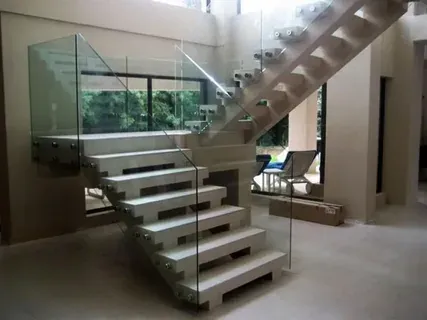

Стеклянные ограждения для лестниц

Стеклянные ограждения для лестниц — это стильное и безопасное решение для оформления внутренних пространств. Компания ДизайнСтекло в Тольятти предлагает ограждения из высококачественного закалённого стекла, которые придадут вашему дому или офису современный и элегантный вид.
Основное содержание
Стеклянные ограждения для лестниц идеально подходят для тех, кто хочет создать в своём интерьере ощущение простора и легкости. Эти конструкции не только стильные, но и практичные. Закалённое стекло, используемое для ограждений, обладает высокой прочностью и безопасностью.
Компания ДизайнСтекло предлагает различные виды стеклянных ограждений: от полностью прозрачных до матовых или с декоративными элементами. Мы создаём ограждения по индивидуальным проектам, что позволяет воплотить любые дизайнерские идеи.
Преимущества стеклянных ограждений для лестниц:
- Современный внешний вид;
- Безопасность благодаря прочности закалённого стекла;
- Простота в уходе и долговечность;
- Возможность сочетания с другими материалами (дерево, металл).
Вывод
Стеклянные ограждения для лестниц от компании ДизайнСтекло — это сочетание стиля, безопасности и долговечности. Мы гарантируем высокое качество наших конструкций и индивидуальный подход к каждому проекту.